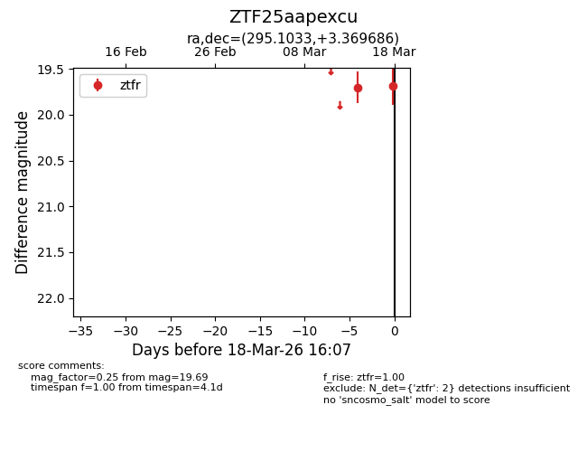
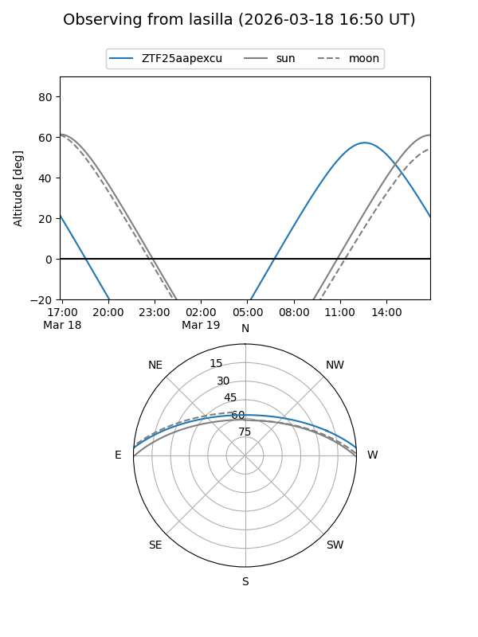
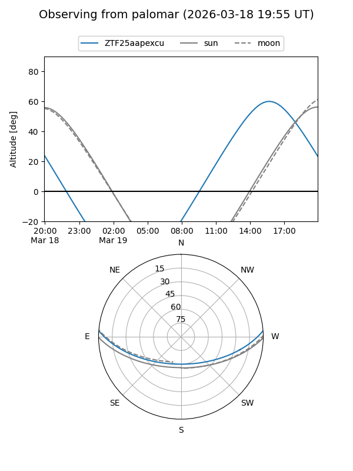

ZTF25aapexcu
Target ZTF25aapexcu at 2026-03-18 16:09
Aliases and brokers:
FINK: link
Lasair: link
ALeRCE: link
alt names
ZTF25aapexcu (ztf,fink_ztf)
Coordinates:
equatorial (ra, dec) = 295.1033,+3.36969
equatorial (HMS+DMS) = 19:40:24.80,+03:22:10.87
galactic (l, b) = (41.6069,-9.30060)
Flags:
Photometry:
last ztfr=19.69
2 ztfr detections
Lightcurve

Visibility


Additional plots